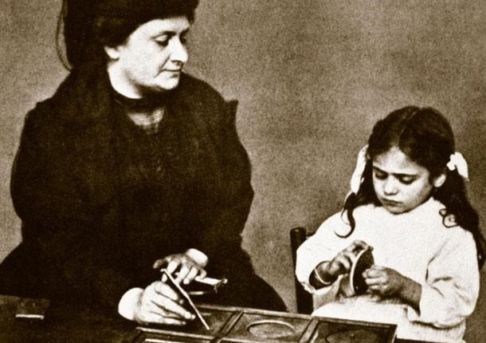

Maria Montessori observing a child at work
Time line of Dr. Maria Montessori's life
- Born on August 31st, 1870 in Italy
- She faced challenges of being born in an orthodox family, wanted to be an engineer but studied doctor
- First woman to become a physician in 1896
- She realized that "Intelligence is not rare, human potential is barely revealed"
- In 1901 she was appointed as the Dirctor of an asylum for mentally challenged children
- She studied the work of 2 physicians Dr. Jean MArk Itard and Dr. E. Seguin and made materials to use it with her asylum children
- Two years later the challenged children passed 6th Grade test
- She wanted to use this material with typical children but was denied so she went back to study psychology and anthropology
- In 1908, in a slum in San Lorenzo the first Casa Di Bambini (Children's house) began
- Through trial and error "Montessori method" evolved
- She wrote her first comprehensive work in 1909 - "The Montessori Method"
- In 1922 she was appointed as "Government Inspector of Schools"
- She died in 1952 after receiving honorary Degrees and Tributes
- 5 Years after her death, a renaissance of Montessori education began
"The child is not an empty being who owes whatever he knows to us who have filled him up with it. No, the child is the builder of man. There is no man existing who has not been formed by the child he once was."
- Maria Montessori